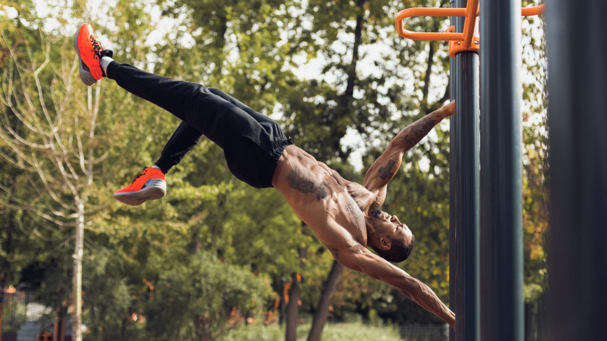
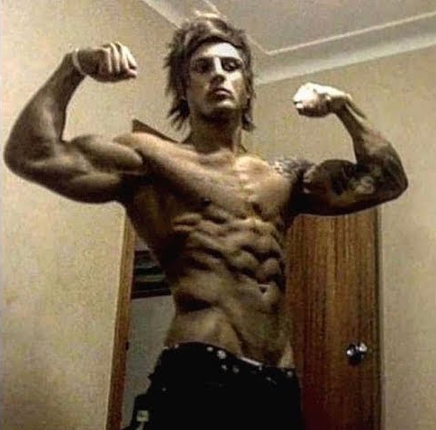

Soorten fitness
home
Calisthenics
Calisthenics is een vorm van fitness waarmee je alleen je eigen lichaam gebruikt. Deze methode werd vroeger veel gebruikt omdat het heel makkelijk is om er mee te beginnen. Als de oefening te makkelijk wordt waardoor er geen spiergroei plaats vindt, kan je heel makkelijk de oefening moeilijker maken door bijvoorbeeld een andere houding aan te nemen. De enige spiergroep waar dat lastig gaat is het onderlichaam. Mensen die calisthenics uitvoeren staan vaak bekend om het kleine onderlichaam.
Aesthetics
Aesthetics, trainen voor aesthetics betekent eigenlijk trainen voor schoonheid. Dit is wat de meeste mensen doen maar het niet behalen. Als je traint voor aesthetics zal je minder sterk worden dan anders. Dit komt omdat je meer herhalingen doet dan anders. Zo wordt je spier wel groter maar zal je minder sterk worden.
Powerliften
Powerliften, powerliften is een vorm van fitness die wordt gedaan om zo veel mogelijk te kunnen tillen en dat te laten zien in wedstrijden.